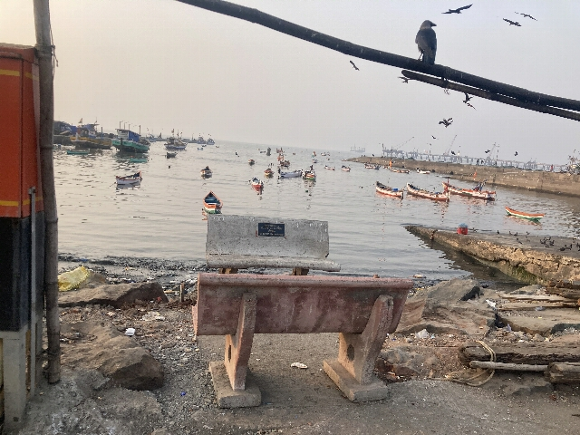
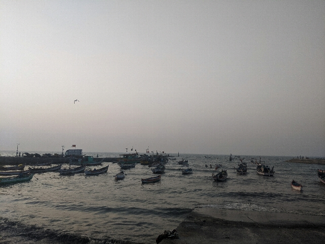
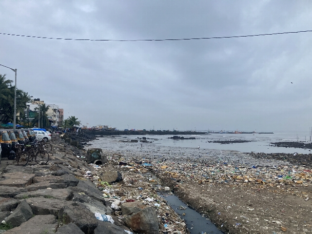
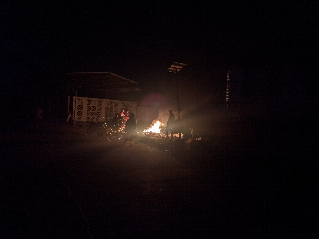
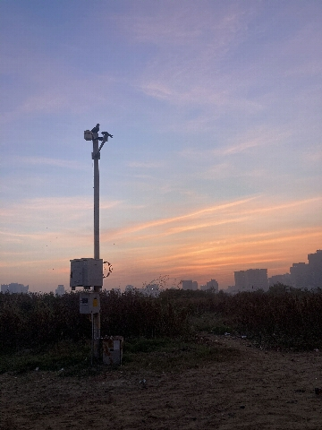
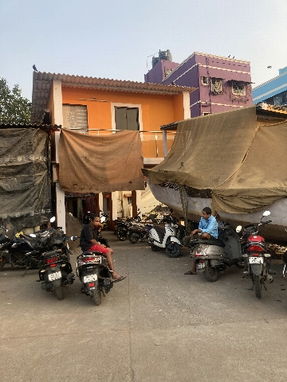
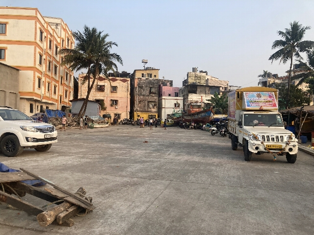

Danda Coastal Road
The “Danda Coastal Road” is a lovely road along between Danda Koliwada and the sea. One end of the road is just past the end of the Carter Road Prominade, and takes you to a pedestrian bridge crossing a nullah, bringing you to Juhu beach near Juhu Koliwada.


One you get past the BMC’s abdication of their garbage collection duty, the Danda Coastal road is quite idyllic—multicoloured fishing boats in the harbour, community spaces…


The star of the show, is a pedestrian bridge taking you to Juhu. Not allowing motorized through-traffic, the traffic on the road has a reasonable balance of resident’s motorized–rickshaws, scooters, smaller loading vehicles for shops co-existing with children riding bicyles, badminton on the street, and Diwali & wedding celebrations.


